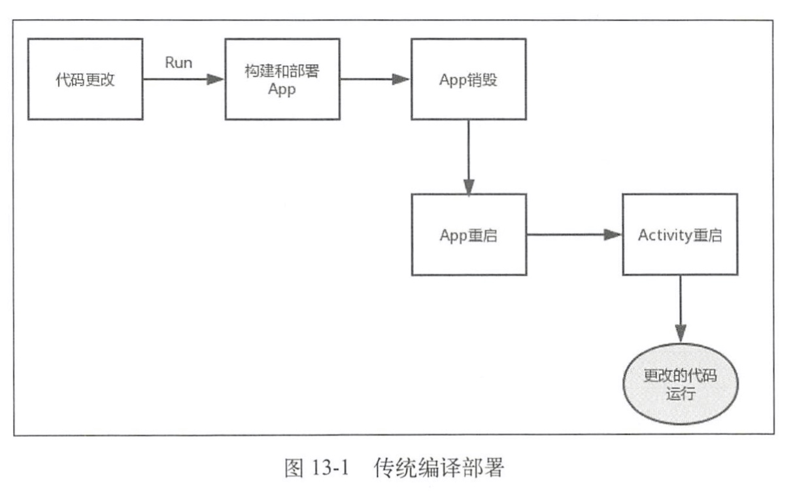
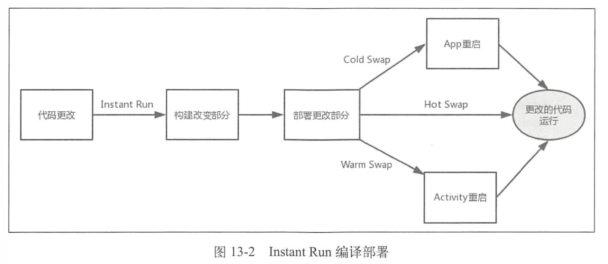
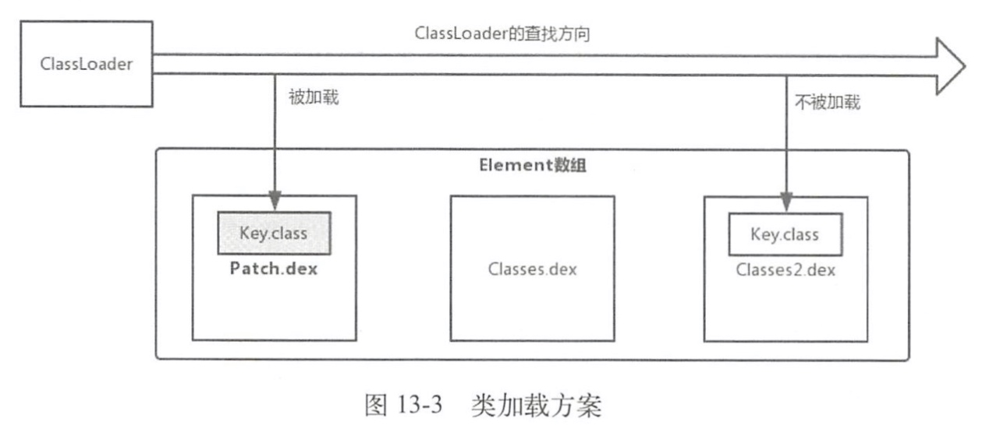
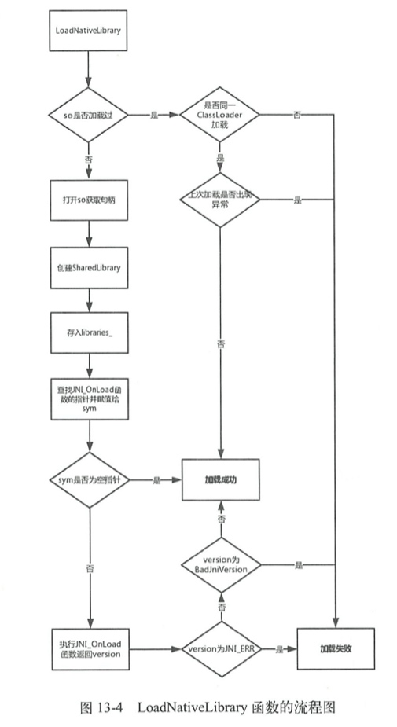

13.1 热修复的产生
13.2 热修复框架的种类和对比
13.3 资源修复
13.3.1 Instant Run概述
Instant Run是Android Studio 2.0以后新增的一个运行机制， 能够显著减少开发人员第二次及以后的构建和部署时间。在没有使用Instant Run前，我们编译部署应用程序的流程如图所示。

从图13一1可以看出,传统的编译部署需要重新安装App和重启App,这显然会很耗时,Instant Run会避免这一情况， 如图所示。

从上图可以看出InstantRun的构建和部署都是基于更改的部分的。InstantRun部署有三种方式，Instant Run会根据代码的情况来决定采用哪种部署方式，无论哪种方式都不需要重新安装App,这一点就已经提高了不少的效率。
- Hotswap:从名称也可以看出HotSwap是效率最高的部署方式，代码的增量改变不需要重启App,甚至不需要重启当前的Activity。 修改一个现有方法中的代码时会采用Hot Swap。
- Warm Swap: App不需重启，但是Activity 需要重启。修改或删除一个现有的资源文件时会采用WarmSwap。
- Cold Swap: App 需要重启，但是不需要重新安装。采用Cold Swap的情况很多，比如添加、删除或修改一个字段和方法、添加一个类等。
13.3.2 Instant Run的资源修复
Instant Run中的资源热修复可以简单地总结为两个步骤:
- 创建新的AssetManager, 通过反射调用addAssetPath方法加载外部的资源，这样新创建的AssetManager就含有了外部资源。
- 将AssetManager类型的mAssets字段的引用全部替换为新创建的AssetManager。
13.4 代码修复
代码修复主要有3个方案，分别是底层替换方案、类加载方案和Instant Run方案。
13.4.1 类加载方案
类加载方案基于Dex分包方案，什么是Dex分包方案呢?这个得先从65536限制和LinearAlloc限制说起。
1. 65536限制
随着应用功能越来越复杂，代码量不断地增大，引入的库也越来越多，可能会在编译时提示如下异常:
com. android. dex. DexIndexOverflowException: method ID not in [0， 0xffff] : 65536
这说明应用中引用的方法数超过了最大数65536个。产生这一问题的原因就是系统的65536限制，65536 限制的主要原因是DVM Bytecode的限制，DVM指令集的方法调用指令invoke-kind索引为16bits, 最多能引用65535个方法。
2. LinearAlloc 限制
在安装应用时可能会提示INSTALL_FAILED_DEXOPT,产生的原因就是LinearAlloc限制，DVM中的LinearAlloc是一个固定的缓存区，当方法数超出了缓存区的大小时会报错。
为了解决65536限制和LinearAlloc限制，从而产生了Dex分包方案。Dex 分包方案主要做的是在打包时将应用代码分成多个Dex,将应用启动时必须用到的类和这些类的直接引用类放到主Dex中，其他代码放到次Dex中。当应用启动时先加载主Dex，等到应用启动后再动态地加载次Dex，从而缓解了主Dex的65536限制和LinearAlloc限制。
Dex分包方案主要有两种，分别是Google官方方案、Dex自动拆包和动态加载方案。
在12.2.3节中学习了ClassLoader的加载过程，其中一个环节就是调用DexPathList 的findClass的方法，如下所示:
public Class<?> findClass(String name, List<Throwable> suppressed) {
for (Element element : dexElements) {//1
Class<?> clazz = element.findClass(name, definingContext, suppressed);//2
if (clazz != null) {
return clazz;
}
}
if (dexElementsSuppressedExceptions != null) {
suppressed.addAll(Arrays.asList(dexElementsSuppressedExceptions));
}
return null;
}
Element内部封装了DexFile，DexFile用于加载dex文件，因此每个dex文件对应一个Element。
多个Element组成了有序的Element数组dexElements。当要查找类时，会在注释1处遍历Element数组dexElements（相当于遍历dex文件数组），注释2处调用Element的findClass方法，其方法内部会调用DexFile的loadClassBinaryName方法查找类。如果在Element中（dex文件）找到了该类就返回，如果没有找到就接着在下一个Element中进行查找。
根据上面的查找流程，我们将有bug的类Key.class进行修改，再将Key.class打包成包含dex的补丁包Patch.jar，放在Element数组dexElements的第一个元素，这样会首先找到Patch.dex中的Key.class去替换之前存在bug的Key.class，排在数组后面的dex文件中的存在bug的Key.class根据ClassLoader的双亲委托模式就不会被加载，这就是类加载方案，如下图所示。

类加载方案需要重启App后让ClassLoader重新加载新的类，为什么需要重启呢？这是因为类是无法被卸载的，因此要想重新加载新的类就需要重启App，因此采用类加载方案的热修复框架是不能即时生效的。
虽然很多热修复框架采用了类加载方案，但具体的实现细节和步骤还是有一些区别的：
- QQ空间的超级补丁和Nuwa是按照上面说得将补丁包放在Element数组的第一个元素得到优先加载。
- 微信Tinker将新旧apk做了diff，得到patch.dex，然后将patch.dex与手机中apk的classes.dex做合并，生成新的classes.dex，然后在运行时通过反射将classes.dex放在Element数组的第一个元素。
- 饿了么的Amigo则是将补丁包中每个dex 对应的Element取出来，之后组成新的Element数组，在运行时通过反射用新的Element数组替换掉现有的Element 数组。
采用类加载方案的主要是以腾讯系为主，包括微信的Tinker、QQ空间的超级补丁、手机QQ的QFix、饿了么的Amigo和Nuwa等等。
13.4.2 底层替换方案
与类加载方案不同的是，底层替换方案不会再次加载新类，而是直接在Native层修改原有类，由于是在原有类进行修改限制会比较多，不能够增减原有类的方法和字段，如果我们增加了方法数，那么方法索引数也会增加，这样访问方法时会无法通过索引找到正确的方法，同样的字段也是类似的情况。
底层替换方案和反射的原理有些关联，就拿方法替换来说，
- 方法反射我们可以调用java.lang.Class.getDeclaredMethod.invoke()
- invoke方法是个native方法，对应Jni层的代码为：
art/runtime/native/java_lang_reflect_Method.cc
- Method_invoke函数中又调用了InvokeMethod函数：
art/runtime/reflection.cc
- 然后可以获取传入的javaMethod（Key的show方法）在ART虚拟机中对应的一个ArtMethod指针，ArtMethod结构体中包含了Java方法的所有信息，包括执行入口、访问权限、所属类和代码执行地址等等
- ArtMethod结构中比较重要的字段是dex_cache_resolved_methods_和的entry_point_from_quick_compiled_code_，它们是方法的执行入口，当我们调用某一个方法时（比如Key的show方法），就会取得show方法的执行入口，通过执行入口就可以跳过去执行show方法。替换ArtMethod结构体中的字段或者替换整个ArtMethod结构体，这就是底层替换方案。
AndFix采用的是替换ArtMethod结构体中的字段，这样会有兼容问题，因为厂商可能会修改ArtMethod结构体，导致方法替换失败。Sophix采用的是替换整个ArtMethod结构体，这样不会存在兼容问题。
底层替换方案直接替换了方法，可以立即生效不需要重启。采用底层替换方案主要是阿里系为主，包括AndFix、Dexposed、阿里百川、Sophix。
13.4.3 Instant Run方案
除了资源修复，代码修复同样也可以借鉴Instant Run的原理， 可以说Instant Run的出现推动了热修复框架的发展。
Instant Run在第一次构建apk时，使用ASM在每一个方法中注入了类似如下的代码：
IncrementalChange localIncrementalChange = $change;//1
if (localIncrementalChange != null) {//2
localIncrementalChange.access$dispatch(
"onCreate.(Landroid/os/Bundle;)V", new Object[] { this,
paramBundle });
return;
}
- 其中注释1处是一个成员变量localIncrementalChange ，它的值为\(change，\)change实现了IncrementalChange这个抽象接口。
- 当我们点击InstantRun时，如果方法没有变化则$change为null，就调用return，不做任何处理。
- 如果方法有变化，就生成替换类，
- 这里我们假设MainActivity的onCreate方法做了修改，就会生成替换类MainActivity$override，这个类实现了IncrementalChange接口，同时也会生成一个AppPatchesLoaderImpl类，
- 这个类的getPatchedClasses方法会返回被修改的类的列表（里面包含了MainActivity），
- 根据列表会将MainActivity的$change设置为MainActivity$override，因此满足了注释2的条件，会执行MainActivity$override的access$dispatch方法，
- accessdispatch方法中会根据参数'onCreate.(Landroid/os/Bundle;)V;'，执行'MainActivityoverride'的onCreate方法，从而实现了onCreate方法的修改。
借鉴Instant Run的原理的热修复框架有Robust和Aceso。
13.5 动态链接库的修复
Android平台的动态链接库主要指的是so库，为了更好地理解，本章动态链接库简称为so。热修复框架的so的修复的主要是更新so，换句话说就是重新加载so，因此so的修复的基础原理就是加载。
13.5.1 System的load和loadLibarary方法
加载so主要用到了System类的load和loadLibarary方法。
- System的load方法传入的参数是so在磁盘的完整路径,用于加载指定路径的so。
- System的loadLibrary方法传入的参数是so的名称，用于加载App安装后自动从apk包中复制到/data/data/ packagename/lib下的so。
1. System的load方法
- Runtime.getRuntime()会得到当前Java应用程序的运行环境Runtime
- 调用了doLoad方法，并将加载该类的类加载器作为参数传入进去:
- doLoad方法会调用native方法nativeLoad
2. System的loadLibrary方法
- 先调用Runtime的loadLibrary0方法，loadLibrary0方法分为两个部分，一个是传入的ClassLoader不为null的部分，另一个是ClassLoader为null的部分
- 我们先来看ClassLoader 为null的部分。先遍历getLibPaths方法，这个方法会返回java.library.path选项配置的路径数组，然后拼接出so路径作为参数调用doLoad方法中。
- 当ClassLoader不为null时，先通过ClassLoader的findLibrary方法来得到fileName，然后调用doLoad 方法。
- findLibrary：ClassLoader的findLibrary方法在实现类BaseDexClassLoader中实现，然后会调用DexPathList的findLibrary方法，这和13.3.1 节讲到的DexPathList的findClass方法类似，
- 在NativeLibraryElement数组中的每一个NativeLibraryElement对应一个so库，
- 然后调用NativeLibraryElement的findNativeLibrary方法就可以返回so的路径。结合的类加载方案，就可以得到so的修复的一种方案，就是：
- 将so补丁插入到NativeLibraryElement数组的前部，让so补丁的路径先被返回，并调用Runtime的doLoad方法进行加载，
- 在doLoad方法中会调用native 方法nativeLoad。
13.5.2 nativeLoad方法分析
LoadNativeLibrary函数的行数很多，这里来做一个总结，LoadNativeLibrary 函数主要做了如下3方面工作：
- 判断so是否被加载过，两次ClassLoader是否是同一个，避免so重复加载。
- 打开so并得到so句柄，如果so句柄获取失败,就返回false。创建新的SharedLibrary,如果传入path对应的library 为空指针，就将新创建的SharedIibrary赋值给library, 并将library存储到libraries_中。
- 查找JNI_OnLoad 的函数指针，根据不同情况设置was_successful 的值，最终返回该was_successful。

讲到这里总结一下so修复主要有两个方案:
- 将so补丁插入到NativeLibraryElement数组的前部，让so补丁的路径先被返回和加载。
- 调用System的load方法来接管so的加载入口。
13.6 本章小结